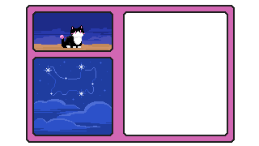

You linger, watching as the last light of the sun gives way to the moon. The great Cheshire Cat appears slowly, its curved smile a beacon in the dark sky. Your mother swishes her tail, waving to you. The stars sparkle, and for a moment, you see them all. Beautiful, cosmic, eternal and ephemeral. You wave back, eyes as wide as the Cheshire Cat's grin. As quick as they came, your siblings recede into the night, and you are left alone with the stars. You smile. They watch over you, always. You decide to return home.